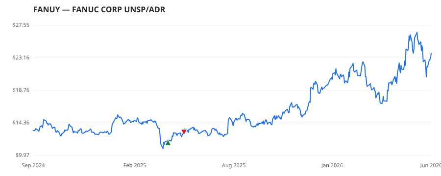

← Back to leaderboard
FANUY — FANUC CORP UNSP/ADR
Other
· unknown cap
$10.91–$26.61
Available range
Members who bought FANUY earned a dollar-weighted
+12.8% from their disclosure
dates, versus +10.9% for the S&P 500 over the same holding
windows (+1.9% alpha).

▲ green = a disclosed purchase · ▼ red = a disclosed sale (plotted on disclosure date)
About
FANUC CORP UNSP/ADR
Recent news
Industrial Laser Market Research Report 2025-2031, Profiles of Key Companies - TRUMPF, Han's Laser, Coherent, IPG Photonics, AMADA, Bystronic
— GlobeNewswire Inc., 2026-05-14 Four OEMs Capture 60% of Robotics Industry AI Visibility
— GlobeNewswire Inc., 2026-04-28 Prediction: This Robotics ETF Will Outperform Over the Next 5 Years
— The Motley Fool, 2025-11-30 Robotics in Drug Discovery Market Trends and Growth Outlook by Towards Healthcare
— GlobeNewswire Inc., 2025-10-17 U.S. Computer Numerical Controls (CNC) Market Size and Share Outlook (2025-2034) Featuring Hurco Companies, Siemens, Protomatic, JTEKT Corp., FANUC Corp. and More
— GlobeNewswire Inc., 2025-09-19
🏛️ Members of Congress who traded FANUY
Member Chamber Out-performer
Disclosed buys $ Return on buys
Bruce Westerman
house —
$8K
+12.8%
Disclosed $ figures are bracket midpoints — filings report ranges
(e.g. $1,001–$15,000), not exact amounts.
Trades: U.S. House Clerk & Senate eFD disclosures · Market data: Polygon.io ·
Returns assume buying at the close on/after each disclosure date, benchmarked vs SPY.
Educational use only — not investment advice.